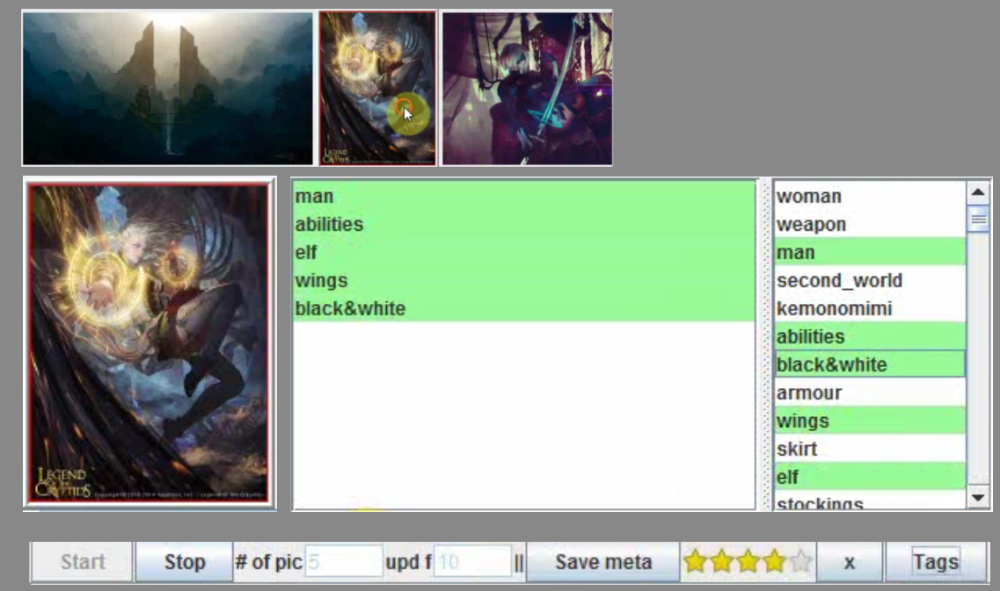

WallManager
Windows slideshow wallpaper tracker. Given the update frequency of the windows wallpapaper, the program fetches the images and stores them in a buffer of a user provided size. The user can then select the images and apply tags and ratings to them. This information is stored within the image itself as windows compliant XMP metadata. Any tags saved in a IPTC segment are converted to XMP. Additionaly all previously used tags are stored in a file and are displayed in the 'tag window' for quick access in order of use frequency.